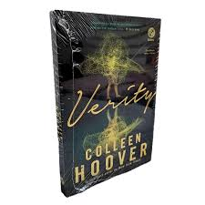

| Livros | Comentários | Imagens |
|---|---|---|
| O Ponto De Virada | O livro "O Ponto da Virada" (The Tipping Point), escrito por Malcolm Gladwell, explora como pequenas mudanças e ações simples podem gerar grandes transformações e propagar ideias como uma epidemia social. | As Armas da Persuasão | O livro "As Armas da Persuasão" (de Robert Cialdini), um clássico da psicologia social, revela os seis princípios psicológicos básicos que levam as pessoas a dizerem "sim", além de explorar como atalhos mentais controlam nossas decisões cotidianas. | |
O Poder do Hábito | O livro "O Poder do Hábito", escrito pelo jornalista Charles Duhigg e lançado em 2012, explora como os hábitos funcionam no cérebro humano e como podem ser transformados para gerar sucesso pessoal, profissional e social. | |
Cem Anos de Solidão | Em Cem anos de solidão , um dos maiores clássicos da literatura, o prestigiado autor narra a incrível e triste história dos Buendía - a estirpe de solitários para a qual não será dada “uma segunda oportunidade sobre a terra” e apresenta o maravilhoso universo da fictícia Macondo, onde se passa o romance. É lá que acompanhamos diversas gerações dessa família, assim como a ascensão e a queda do vilarejo. Para além dos artifícios técnicos e das influências literárias que transbordam do livro, ainda vemos em suas páginas o que por muitos é considerado uma autêntica enciclopédia do imaginário, num estilo que consagrou o colombiano como um dos maiores autores do século XX. | |
Quarto de Despejo – Diário de uma Favelada | O diário da catadora de papel Carolina Maria de Jesus deu origem à este livro, que relata o cotidiano triste e cruel da vida na favela. A linguagem simples, mas contundente, comove o leitor pelo realismo e pelo olhar sensível na hora de contar o que viu, viveu e sentiu nos anos em que morou na comunidade do Canindé, em São Paulo, com três filhos. | |
Verity | Verity Crawford é a autora best-seller por trás de uma série de sucesso. Ela está no auge de sua carreira, aclamada pela crítica e pelo público, no entanto, um súbito e terrível acidente acaba interrompendo suas atividades, deixando-a sem condições de concluir a história... E é nessa complexa circunstância que surge Lowen Ashleigh, uma escritora à beira da falência convidada a escrever, sob um pseudônimo, os três livros restantes da já consolidada série. |  |